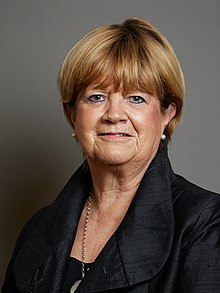

By the time you read this …
 |
| Baroness Heather Hallett Chair of the UK COVID INquiry |
{kind=link}
I’ll be on my way to attend the opening session of module 3 of the COVID Inquiry. Unlike some previous massively long-running public inquiries this one, chaired by Baroness Hallett, is sub-divided into smaller, subject-specific sections called modules. Module 1, 'Resilience and Preparedness', has already been concluded and a report has been published. It will come as little surprise to hear that Baroness Hallett did not consider Britain well-prepared for a pandemic. Hearings for Module 2 – Core UK Decision-making and Political Governance -- have also been completed but there’s no report as yet. John’s Campaign (or Ymgyrch John as we become when we cross the border) was asked to speak for patients / care home residents and their family carers in Wales.
This made it just about manageable for a small organisation and it
was often unexpectedly interesting to see how the situation in a different
country was handled locally -- as well as being complicated by their
relationship (or not) with the government at Westminster. There was an immense
amount of evidence-gathering, preliminary hearings, reading and reporting to be
done over more than a year (I do now understand why a thorough public
inquiry takes so long), before, finally, I travelled to Cardiff in February to
hear Adam Straw, our barrister, present our opening submission at a public
hearing. This summarised what we really wanted the Inquiry to listen to, and
reflect on, and change for the future. Tomorrow this process with begin again in London for
Module 3
Every opening session of a module includes an impact film, ordinary people talking about what happened to them, or to their relatives. Different films in the different countries. Here's what we were shown in Cardiff https://youtu.be/_GGkREVtSMA Watched in an inquiry room, this was moving and sobering. It made it so clear why we were there, what people needed from this process. The session continued with lawyers speaking on behalf of those people bereaved by the pandemic in Wales. Some of the bereaved were also present. While many of us have put that grim pandemic period behind them, other families have not been able to do this, particularly if they felt that the death of the person they loved had been avoidable. Their pain and anger is still raw.
You may prefer to watch the 20 minute film shown at the beginning of the first Module 2 public hearing in London as it includes speakers from our four different countries. It may bring back to you what it was like, then – people falling ill and dying without their families being able to tend them – or mourn them according to the usual rituals. This clip shows Baroness Hallett introducing the film on the first day of the Module. I find her sincerity compelling. I believe she wants to listen and to act. I hope she will succeed
So many people suffered in different ways. Apart from those whose lives were directly damaged by the illness itself, there were already millions of people who were already living with disabilities and diseases illnesses that were not COVID, but which left them reliant on care from other people. Suddenly, the measures taken to reduce infections pulled the care rug from under them. Either their families were not allowed to contact with them at all, if they lived in a care home, a hospital or any other institution. Or, if they lived at home, the families were left to care with minimal outside support, often putting them under intense strain and anxiety.
Because John’s Campaign was founded to
insist on the importance of family care, particularly for people living with
dementia (or any other condition which impairs the ability to
understand a situation or express one’s needs clearly) we were very often asked
for help by people who had been separated from the person they loved by The Rules – or (more usually) by someone else’s
interpretation of The Rules. They may not have been damaged or bereaved by the COVID virus
itself, but by the measures adopted to counter it. Separation and isolation, a
breaking of the closest personal ties. These people also remain troubled and angry
or wracked by undeserved guilt.
Here’s part of an email sent to Mark Drakeford, then the first
minister of Wales, with Vaughan Gething, then health minister, copied in.
Do you know when I can see my husband in his nursing home
again? He was denied garden visits. Window visits are distressing for him, as
evidenced in the attached photo. I have achieved one 15-minute indoor visit in
6 months, following your previous decision to give permission for visiting. In
order to get this, I had to fight verbally, cry, sob and plead. It was
demeaning and degrading. When I pointed out that you had given permission, I
was told the owner did not respect this decision and could do whatever he
liked.
At the moment there are no visits allowed because of
lockdown. How would any human being like it if they received a phone call which
in effect meant sorry you can’t see your husband anymore and we are keeping him
locked up here, not allowing him contact with you or his family and we will
deny him his human rights. My husband thinks that I live with him and so must
be wondering where I am. In fact I know he is because the staff have told me
that he goes to the door at the end of the corridor which has a tiny window in
it and shouts “Jen, Jen!” on a daily basis.
That was sent in September 2020. Jenny Davies, the writer, was a former dementia nurse who understood only too well the depth of her husband’s confusion and distress. What had it been like for her, day after day, knowing how her husband was suffering but being denied any way to comfort him or attempt to explain the situation? She didn’t get an answer to her message. Perhaps the government believed that it was sufficient to have issued guidance to mitigate the harshest imposition of lockdown, they were deaf to the evidence that this was being ignored. Adam Straw read it as part of our opening statement for Module 2b in Cardiff. Would it be heard this time? We don't yet know.
Reading through John’s Campaign emails received during the pandemic period (and since), I have found myself experiencing my own renewed feelings of anger, grief and bewilderment, although I didn't suffer directly. Other inquiry participants have said the same and I was un-surprised to hear an expert witness from the Grenfell Tower Inquiry say that the experience of going through the six years of the inquiry had changed her for ever. The virus itself was frightening, but what I found hardest to cope with (then) was discovering -- from people like Jenny Davies -- how some people with power, not just politicians, but care home managers, ward sisters, local authority officials, appeared to react by treating others with extraordinary callousness and irrationality. They were frightened, no doubt. Or they enjoyed saying no.
Now, through the slow process of Baroness Hallett's Inquiry we may also begin to discover more
than we might have wanted to know about incompetence in high places; the gulf between the rulers and the ruled; the instances where
‘guidance’ parted company with law, common sense and human rights. We need to
know this. We may not like what we hear but we must understand whether such
suffering was inevitable. Bad things happen in life. We all die. But did it
have to be like this?
We don’t know. This is only module 3 of the unfolding investigation. Tomorrow’s public hearing will be the first of a series that will last until the end of November. Here is the official description of its scope and purpose.
The module will consider the impact of the Covid-19
pandemic on healthcare systems in England, Wales, Scotland and Northern
Ireland. This will include consideration of the healthcare consequences of how
the governments and the public responded to the pandemic. It will examine the
capacity of healthcare systems to respond to a pandemic and how this evolved
during the Covid-19 pandemic. It will consider the primary, secondary and
tertiary healthcare sectors and services and people’s experience of healthcare
during the pandemic, including through illustrative accounts. It will also
examine healthcare-related inequalities (such as in relation to death rates,
PPE and oximeters), with further detailed consideration in a separate designated
module.
It'll be streamed on YouTube or you can catch up via transcripts at the end of each day.
{kind=link}
If that sounds dry, or you haven’t the time, you could begin by reading Rachel Clarke’s book Breathtaking to experience the earliest weeks to the pandemic from a doctor’s point of view. Or you can stream it via ITVX. She describes the overall experience of the pandemic as ‘a bearpit of contested narratives’. But that’s what the Inquiry has to hear – and then weigh. So that’s why I’m going tomorrow: to try to ensure that voices that are heard include the people who suffered from decisions made, in which they had no say – and when they attempted to make contact with the people at the centre – as Jenny Davies did -- to explain the ways in which the remedies might be worse that the disease, they were not listened to.
I’ve started a blog in this way before: ‘By the time you read this, I'll be…’ It was in March 2022 when I was heading for a meeting of MPs though whom I hoped we might effect a change in the law, to protect people from future harmful separations of husband and wife, parent and child, pledged partners and dearest friends in their time of greatest need. Other people came to tell their stories. We made progress, but not far enough. (The following year, on the same date I wrote 'Wasted Journeys to Westminster?') Perhaps this immense public inquiry will fail to bring about effective reform. But if we don’t keep trying, we won’t ever know.
I have Don McLean singing 'Vincent' in my head: 'They were not listening, They're not listening still. Perhaps they never will.' I don't want that to be true.
So I'm going tomorrow.
And if you too are an inveterate optimist, you can record your own COVID experience by using the Inquiry link, Every Story Matters.
www.johnscampaign.org.uk